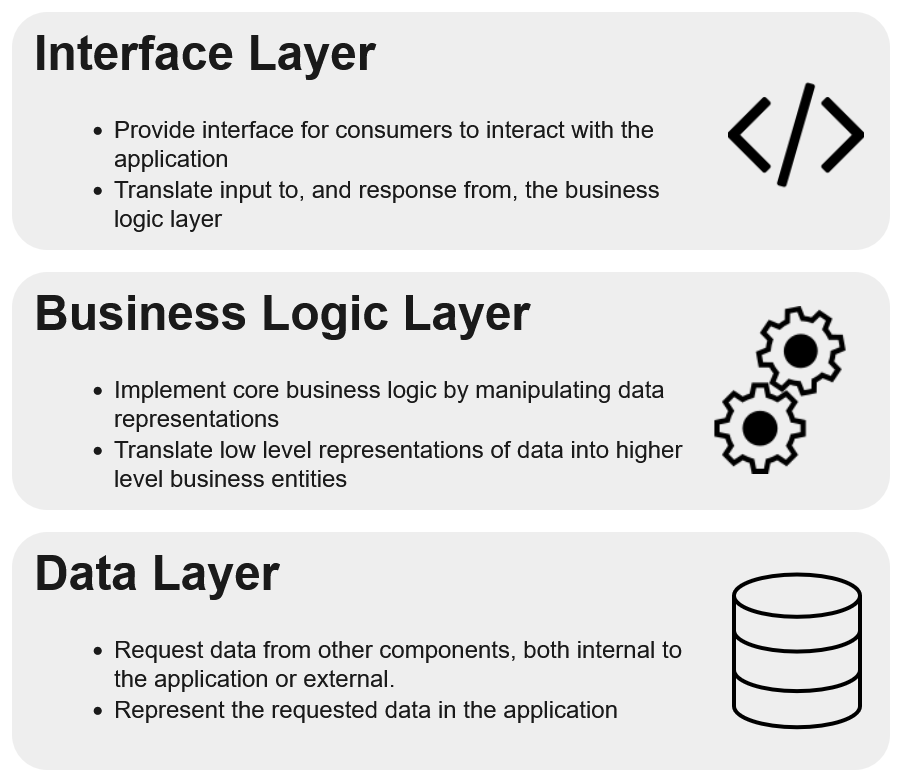

Delve 8: Let's Build a Modern ML Microservice Application - Part 3, The Business Logic and Interface Layers

"For every minute spent organizing, an hour is earned." - Benjamin Franklin
ML Microservices, Completing the Layers
Hello data delvers! In part two of this series we refactored to create a separate data layer of our application. As a refresher, these are the three layers of the application we are creating:
Figure 1: The Three Layer Application

For this delve, we will be creating the remaining two layers.
The Business Logic Layer
The Business Logic Layer is responsible for implementing the core logic of our application. It does this by manipulating the data models we receive from the data layer and translating the results of the manipulations into business entities to pass on to the Interface Layer. You will sometimes see this layer abbreviated as BLL.
Let's take a look at the main function of our app:
@app.get('/api/search')
def search(title: str) -> str:
"""Executes a search against the Metropolitan Museum of Art API and returns the url of the primary image of the first search result.
Args:
title: The title of the work you wish to search for.
Returns:
The url of the primary image of the first search result or 'No results found.' if no search results are found.
"""
search_request: httpx.Response = httpx.get(
'https://collectionapi.metmuseum.org/public/collection/v1/search',
params={'q': title, 'title': True, 'hasImages': True},
)
object_ids: Optional[list[int]] = search_request.json().get('objectIDs')
if object_ids:
object_request = httpx.get(f'https://collectionapi.metmuseum.org/public/collection/v1/objects/{object_ids[0]}')
primary_image_url = object_request.json().get('primaryImage')
return primary_image_url
else:
return 'No results found.'
The logic we are implementing here is:
- Search for a work in the Met collection by the title
- If the work exists:
- Fetch the primary image of the work and return it
- Else:
- Return "No results found."
Pretty simple and hopefully you can see how we can use the data layer operations we built out in the last part to implement it!
from provider.met_provider import MetProvider
met_provider = MetProvider('https://collectionapi.metmuseum.org')
def search_by_title(title: str): -> str
# Search for a work in the Met collection by title
search_response = met_provider.search(q=title, title=True, has_images=True)
object_ids = search_response.object_ids
# If the work exists
if object_ids:
# Fetch the primary image of the work
object_request = self.met_client.get_object(object_id=object_ids[0])
primary_image_url = object_request.primary_image
return primary_image_url
else:
return 'No results found.'
Using the MetProvider to implement this logic gives us all the data validation benefits we discussed in the last part so we don't have to worry about validating the schema of the data we are working with at this layer, the provider handles all that for us!
The Service Component
Similarly to how we broke the Data Layer into components (Namely Providers and Views) I like to break the Business Logic Layer into Service components. These are not services in the microservice sense, but a component of the application that performs a function or set of related functions. In our case the function we want to perform is to search for a work by it's title (though in the future we may search by other attributes as well). To that end we can create a new folder under src called service to hold our application services. Inside of it we can create an __init__.py file and a search_service.py file. We should now have a directory structure that looks like the following:
src
├── main.py
├── provider
│ ├── __init__.py
│ └── met_provider.py
├── service
│ ├── __init__.py
│ └── search_service.py
└── shared
├── __init__.py
├── data_model_base.py
└── view
├── __init__.py
└── met_view.py
Inside of search_service.py we can create our SearchService class:
from provider.met_provider import MetProvider
class SearchService:
"""A service for searching the Metropolitan Museum of Art API.
Args:
met_provider: A client for the Metropolitan Museum of Art API.
"""
def __init__(self, met_provider: MetProvider):
self.met_provider = met_provider
def search_by_title(self, title: str) -> str:
"""Searches the Metropolitan Museum of Art API by title.
Args:
title: The title of the work to search for.
Returns:
The url of the primary image of the first search result.
"""
# Search for a work in the Met collection by title
search_response = self.met_provider.search(q=title)
object_ids = search_response.object_ids
# If the work exists
if object_ids:
# Fetch the primary image of the work
object_request = self.met_provider.get_object(object_id=object_ids[0])
primary_image_url = object_request.primary_image
return primary_image_url
else:
return 'No results found.'
On thing to point out here is we are not instantiating the MetProvider class within our SearchService class directly, instead we are passing it in the constructor. This is a form of dependency injection, this means our search service doesn't need to know the information needed to create a MetProvider object (in this case the url to the Met API), it is simply provided one. In separating these concerns, our application layers can be much more loosely coupled and easier to refactor without needing to modify multiple layers at once. Let's go ahead and try this service out!
>>> from provider.met_provider import MetProvider
>>> from service.search_service import SearchService
>>> search_service = SearchService(MetProvider('https://collectionapi.metmuseum.org'))
>>> search_service.search_by_title("The Death of Socrates")
'https://images.metmuseum.org/CRDImages/ep/original/DP-13139-001.jpg'
It works! However, what if we wanted to display a different error message to the user on the front end of our application. Right now our service is determining the response to be shown when that should really be determined by the Interface layer of our application. What if instead of returning the error message directly our service could throw an Error instead. Then our Interface layer could decide how to handle that error, whether that be displaying an error message or some other behavior. Let's go ahead and make that change:
from provider.met_provider import MetProvider
class SearchService:
"""A service for searching the Metropolitan Museum of Art API.
Args:
met_provider: A client for the Metropolitan Museum of Art API.
"""
def __init__(self, met_provider: MetProvider):
self.met_provider = met_provider
def search_by_title(self, title: str) -> str:
"""Searches the Metropolitan Museum of Art API by title.
Args:
title: The title of the work to search for.
Returns:
The url of the primary image of the first search result.
Raises:
ValueError: If no results are found.
"""
# Search for a work in the Met collection by title
search_response = self.met_provider.search(q=title)
object_ids = search_response.object_ids
# If the work exists
if object_ids:
# Fetch the primary image of the work
object_request = self.met_provider.get_object(object_id=object_ids[0])
primary_image_url = object_request.primary_image
return primary_image_url
else:
raise ValueError('No results found.')
Don't forget to update the docstring of your function to indicate this function now raises an exception!
Finally, what if in addition to the primary image url, we also want to return any additional images the work has? One way we could do this is by returning a tuple of both the primary and additional images. Something like:
primary_image_url = object_request.primary_image
additional_image_urls = object_request.additional_images
return primary_image_url, additional_image_urls
This works but it means whoever is using this service has to remember what order the values are in to correctly use them. This gets even worse the more data we want to return. Instead of this we can utilize a concept we touched on briefly in the last part, the Data Transfer Object.
Bringing DTO to the BLL
If you recall, in part 2 we introduced the concept of Data Models, classes using the Pydantic library to represent data within our application. We then further sub-divided them into Views, data models for representing something external to the system, and Data Transfer Objects (DTO) for internal representations. We heavily used Views when creating our MetProvider class. In much the same way we can represent the response from our service as a data model. We could represent it something like so:
In this way, in our service layer we are combining elements of the underlying Views into something that makes more sense as a business entity a Search Result.
To implement this we can first create a new folder under src/shared called dto to hold all our Data Transfer Objects. Inside this folder create your empty __init__.py and a Python file called search_result.py.
In much the same way we had a base class for all our views, we can have one for our DTOs as well. Open up the data_model_base.py file and create a new base class for our DTOs to inherit:
from pydantic import BaseModel, ConfigDict
from pydantic.alias_generators import to_camel
class ViewBase(BaseModel):
model_config = ConfigDict(alias_generator=to_camel)
class DTOBase(BaseModel):
pass
Our base class doesn't do anything for now, we shouldn't need to convert between cases at this layer for example, but it will be useful to have for the future.
We should now have a file structure that looks like this:
src
├── main.py
├── provider
│ ├── __init__.py
│ └── met_provider.py
├── service
│ ├── __init__.py
│ └── search_service.py
└── shared
├── __init__.py
├── data_model_base.py
├── dto
│ ├── __init__.py
│ └── search_result.py
└── view
├── __init__.py
└── met_view.py
Inside of search_result.py we can then create our DTO:
from shared.data_model_base import DTOBase
class SearchResult(DTOBase):
object_id: int
title: str
primary_image: str
additional_images: list[str]
total_results: int
I added in a few more fields that might be useful in the future!
We can then modify our search service to utilize the DTO like so:
from provider.met_provider import MetProvider
from shared.dto.search_result import SearchResult
class SearchService:
"""A service for searching the Metropolitan Museum of Art API.
Args:
met_provider: A client for the Metropolitan Museum of Art API.
"""
def __init__(self, met_provider: MetProvider):
self.met_provider = met_provider
def search_by_title(self, title: str) -> SearchResult:
"""Searches the Metropolitan Museum of Art API by title.
Args:
title: The title of the work to search for.
Returns:
The search results.
Raises:
ValueError: If no results are found.
"""
# Search for a work in the Met collection by title
search_response = self.met_provider.search(q=title)
object_ids = search_response.object_ids
# If the work exists
if object_ids:
# Fetch the details of the work
object_request = self.met_provider.get_object(object_id=object_ids[0])
return SearchResult(
object_id=object_request.object_id,
title=object_request.title,
primary_image=object_request.primary_image,
additional_images=object_request.additional_images,
total_results=search_response.total,
)
else:
raise ValueError('No results found.')
Let's try it out!
>>> from provider.met_provider import MetProvider
>>> from service.search_service import SearchService
>>> search_service = SearchService(MetProvider('https://collectionapi.metmuseum.o\
rg'))
>>> search_service.search_by_title("The Death of Socrates")
SearchResult(object_id=436105, title='The Death of Socrates', primary_image='https://images.metmuseum.org/CRDImages/ep/original/DP-13139-001.jpg', additional_images=['https://images.metmuseum.org/CRDImages/ep/original/LC-31_45_suppl_003.jpg', 'https://images.metmuseum.org/CRDImages/ep/original/LC-31_45-2.jpg', 'https://images.metmuseum.org/CRDImages/ep/original/LC-31_45-3.jpg'], total_results=23874)
Much better! We now have all the details of the work nicely organized in a data validated model for us, neat!
That completes our Business Logic Layer for now! All that's left is to now modify our Interface Layer to utilize this service!
The Interface Layer
The final layer of our application is the Interface Layer, this is where users of our application will interact with it (typically through an API). We already had this layer all along it's our main.py file. But now we can greatly simplify it using the capabilities we've built up in the previous layers:
from fastapi import FastAPI
from provider.met_provider import MetProvider
from service.search_service import SearchService
app = FastAPI()
search_service = SearchService(MetProvider('https://collectionapi.metmuseum.org'))
@app.get('/api/search')
def search(title: str) -> str:
"""Executes a search against the Metropolitan Museum of Art API and returns the url of the primary image of the first search result.
Args:
title: The title of the work you wish to search for.
Returns:
The url of the primary image of the first search result or 'No results found.' if no search results are found.
"""
search_result = search_service.search_by_title(title)
return search_result.primary_image
Much simpler! If the requirements of our application change, it's also easy to modify. Want to get the additional images too? Easy. Total number of results? Done. All without increasing the complexity of our interface layer! One final thing to do here is to provide some better error handling in the case we get no results though. If you search for something that the Met does not have right now this will cause a ValueError to bubble up to the top and result in a 500: Internal Server Error response. We can change that at this layer to be something more natural like a 404 status code:
from fastapi import FastAPI, HTTPException
from provider.met_provider import MetProvider
from service.search_service import SearchService
app = FastAPI()
search_service = SearchService(MetProvider('https://collectionapi.metmuseum.org'))
@app.get('/api/search')
def search(title: str) -> str:
"""Executes a search against the Metropolitan Museum of Art API and returns the url of the primary image of the first search result.
Args:
title: The title of the work you wish to search for.
Returns:
The url of the primary image of the first search result or 'No results found.' if no search results are found.
"""
try:
search_result = search_service.search_by_title(title)
return search_result.primary_image
except ValueError:
raise HTTPException(status_code=404, detail='No results found.')
Congratulations! You now have a fully 3 layered application that will be flexible to changing requirements in the future! In future delves we'll look at how we can harden this application even further and make it even more configurable. We are well on our way to plugging machine learning into it too! Full code for this part is available here.
Delve Data
- Breaking our application into three layers Data, Business Logic, and Interface allows us to separate concerns within our codebase and make it more flexible and robust.